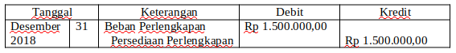

1. PEMAKAIAN PERLENGKAPAN.
Perlengkapan kantor adalah barang-barang yang dibutuhkan untuk menyelesaikan suatu pekerjaan kantor, contohnya kertas, amplop, pita mesin, dsb. Penggunaan perlengkapan tidak bisa diukur dengan nilai rupiah dan dicatat setiap penggunaannya. Cara perhitungannya sederhana yaitu pada akhir periode saldo catatan perlengkapan diselisihkan dengan hasil perhitungan fisik berupa jumlah Perlengkapan yang masih tersisa. Hasil perhitungan ini merupakan besarnya pemakaian Perlengkapan pada periode itu.
Contoh:
Daftar saldo Akun Perlengkapan per 31 Desember 2018 sebesar RP 2.000.000,00. Pada akhir periode setelah diadakan perhitungan stock ternyata perlengkapan yang masih tersisa sebesar Rp500.000,00. Berarti selama periode tahun 2018 perlengkapan yang terpakai = Rp 2.000.000,00 – Ro 500.000,00 = Rp 1.500.000,00. Jurnal penyesuaian yang dibuat perusahaan pada akhir periode adalah:
